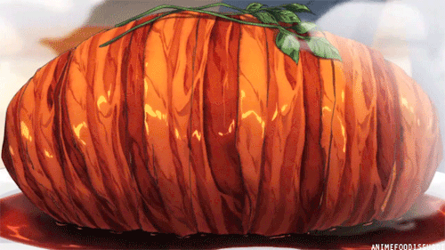

GOTCHAAAA ROAST PORK!!!!!

A beautiful and gorgeous Asian delicacy
Gotcha Roast Pork is a made up dish featured in the first episode of the animanga
"Food Wars!"
It was served to a group of urban developers who sought to get rid of his family's restaurant!
Ingredients
- 5-6 medium yukon gold potatoes
- 2 large king trumpet mushrooms, finely minced
- 2 cloves garlic, minced
- ½ yellow onion, finely chopped
- 1 Tbsp kosher salt
- 4 Tbsp butter, cold + divided
- 12-13 slices thick cut bacon, center-cut
- 4 sprigs rosemary, cut into 1-inch sections
- 150 ml red wine
- 75 ml sweet sake
- 10 ml soy sauce
- To garnish: watercress
Gotcha Roast Pork Method
- Prepare a large pot with a steamer basket and add about 1 inch of water to the pot.
- Cut the potatoes into quarters and add them to the steamer basket.
Turn the heat to medium-high and bring the water to a simmer.
Cover the pot with a lid, reduce the heat to medium-low, and steam the potatoes for 15-20 minutes or until they are completely tender.
- Transfer the potatoes to your work surface and let them sit until they are cool enough to handle, about 5 minutes.
Then, peel off the skins and transfer the potatoes to a large bowl.
- Mash the potatoes with a pestle or masher until the mixture is relatively homogenous.
Don't worry if there are a few chunks.
- Add 2 tablespoons of butter to a large skillet or wok.
Begin heating the butter over medium-high heat.
Once frothy, add the onions and mushrooms, cook for 3-4 minutes or until the onions have become slightly tender.
- Add the garlic and continue cooking the mixture until everything is lightly browned and completely tender,
about 4-5 minutes.
- Transfer the mushroom mixture to the mixing bowl with the potatoes.
Add the salt and knead the mixture by hand for 4-5 minutes.
- Place a large sheet of plastic wrap over your work surface.
Add the filling to the center of the sheet.
Shape the filling into an even mound and then wrap it tightly in the plastic wrap.
- Refrigerate the filling for 20-30 minutes.
- Meanwhile, place another large sheet of plastic wrap (this may require two sheets for the width) onto your work surface.
Shingle 7 pieces of thick cut bacon in the center of the plastic wrap,
then lay 5 pieces of bacon perpendicular to the original slices on top.
This should create a cross pattern.
- Place the chilled filling in the center of the bacon slices and then wrap the bacon around the filling.
If there is a gap at the top of the filling, add another piece of bacon to completely cover it.
- Wrap the 'pork roast' in the plastic wrap and refrigerate it for 10-15 minutes.
- Meanwhile, preheat the oven to 400 °F and prepare a small rimmed baking sheet with an inlaid rack.
- Cut 4 lengths of butcher's twine, about 10 inches in length.
Place one piece horizontally on the rack and then the other three pieces vertically.
The pieces of butcher's twine should be roughly equidistant from each other.
- Place the chilled'pork roast' seam-side down on the rack, then loosely tie the pieces of twine around it.
This is just to keep the bacon from moving during the cooking process,
so it doesn't need to be very tight.
- Place the pieces of rosemary underneath the pieces of twine.
- Bake the 'pork roast' for 30-40 minutes, or until the bacon is well browned.
- Allow the 'pork roast' to rest for 10 minutes.
- Meanwhile, begin heating a large high-sided skillet over medium-high heat.
- Add the red wine, sake, and soy sauce. Cook until the sauce has reduced by half, about 4-5 minutes.
- Reduce the heat to low and add the remaining 2 tablespoons of cold butter.
Whisk constantly until the sauce is glossy, thickened, and the butter has completely melted.
- Transfer the 'pork roast' to the serving dish of your choice, then pour the sauce over the roast.
- Garnish the 'pork roast' with some watercress and serve immediately.
Return to the home page!
Return to The Top!